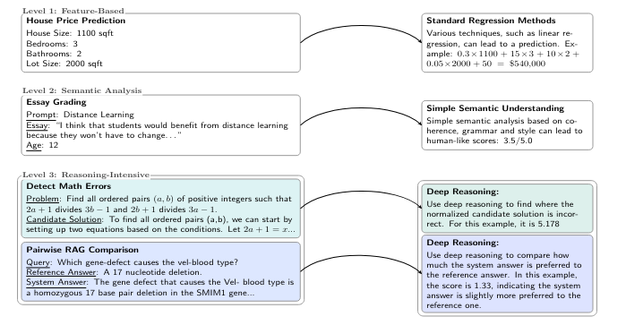
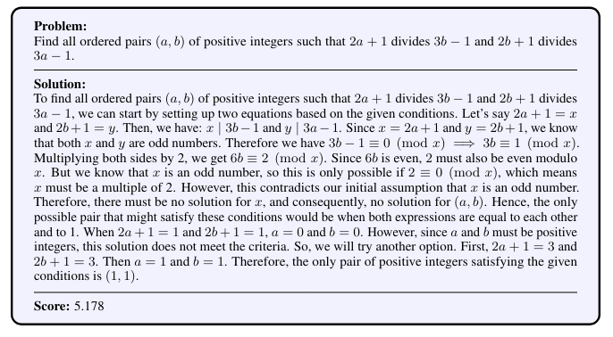

We asked large language models (LLMs) to estimate the fraction of a proposed math solution that was correct.
Turns out that while they can reason through complex problems they still have a hard time producing precise numerical outputs.
We call tasks, like the one above, Reasoning-Intensive Regression (RiR) problems and below I'll talk about why this is a growing body of problems and what current tools we have at our disposal for solving them.
RiR is about regression tasks that require sequential reasoning rather than shallow feature identification. Think scoring customer satisfaction, evaluating LLM outputs against rubrics, or advanced retrieval. As language models become more advanced, there's a growing need for finer/more granular judment scores (think world modeling). See our proposed taxonomy below
Given this, we ask: Are there effective methods that are data- and compute-efficient for tackling ad-hoc RiR problems?
Your first question might be, why "ad-hoc" RiR problems? During our search for appropriate benchmarks we found the literare quite lacking. Most regression benchmarks were not reasoning-intensive enough, and for those that were, the papers would be published without the accompanying dataset. Consequently, out first job was to create simple RiR datasets!
We take four tasks from the literature, like ProcessBench and rubric-based pairwise judges from RAG-QA, and cast them into RiR benchmarks. Take a look below, at an example entry for our task requiring the language model to predict where the proposed mathematical solution went wrong with a score between 0 and 10 (where 0 would mean the proposed solution failed at the beginning, while 10 would represent failing at the very end).
Applying two standard methods revealed key tradeoffs. Fine-tuning encoders (i.e. NeoBERT) led to fine-grained learning but collapsed to mean predictions when reasoning was needed and prompting LLMs (i.e. GPT 4.1 and GPT 5) led to strong reasoning but coarse and imprecise scores.
To resolve the issues described above, we developed MENTAT. This algorithm is composed of two phases:
- Phase 1: LLM analyzes prediction errors in lightweight batches to evolve prompts, learning from mistakes.
- Phase 2: Multiple rollouts from optimized prompt get aggregated by MLP trained on statistical features.
We tested MENTAT on our four task and while it showed consistent improvements it also revealed surprising trade-offs on the pairwise RAG comparison and essay grading tasks: unlike detecting math errors, GPT-4.1 outperformed GPT-5 on those, driven by “overthinking” from the reasoning model.
To recap: We define RIR as those requiring precise predictions, proper ranking, AND deep per-instance reasoning. Standard RiR methods struggle with balancing these! We introduce MENTAT, a simple algorithm that combines lightweight batched prompt evolution with ensemble learning. While MENTAT shows improvements on the standard methods, much headroom remains. Moreover, to truly develop better algorithms for RiR, we need less ad-hoc benchmarks.
This was a short summary of the paper, to get more details check it out here . If you have any questions or just want to chat about this stuff, feel free to email me!